An integrated deep learning approach for assessing the visual qualities of built environments utilizing street view images
Investigating residents' visual preferences and perception of built environments is crucial in visual landscape assessment (VLA). While traditional methods face challenges in large-scale applications, the advancement of deep learning techniques and the availability of street view images (SVIs) present new opportunities. However, existing approaches for assessing SVIs' visual qualities are of lower precision, and the link between objective visual elements and subjective perceptions of SVIs remains unclear. In this study, we propose a novel deep learning approach, “SegFormer-B5+ConvNeXt-B+RF”, which achieves an average accuracy of 78.47% in predicting six subjective perceptions (beautiful, boring, depressing, lively, safe, and wealthy) within the Place Pulse 2.0 dataset. This provides an effective tool for assessing citizens' visual perceptions of urban environments. Subsequently, to demonstrate its practical application, we conducted a case study using 36,620 SVIs from the Tianhe District of Guangzhou. Perception maps were constructed based on four objective metrics and six subjective metrics. Results showed a correlation between the spatial distribution of objective visual elements and subjective perceptions, with city centers generally perceived more positively than suburbs. Our application of SHapley Additive exPlanation (SHAP) and Class Activation Map (CAM) visualizations yielded interpretable insights consistent with eye-tracking studies, highlighting human focus on artificial objects, attractive and unattractive elements, and heterogeneous landscapes. It's noteworthy that urban planners and decision-makers in other cities can apply our approach to generate perception maps that identify low-quality areas. SHAP and CAM visualizations further assist in understanding which aspects draw human attention in these areas. This knowledge is crucial for urban designers to implement targeted renewal strategies, ultimately contributing to the creation of sustainable and living-friendly cities.
主要图表 | Main Figures and Tables
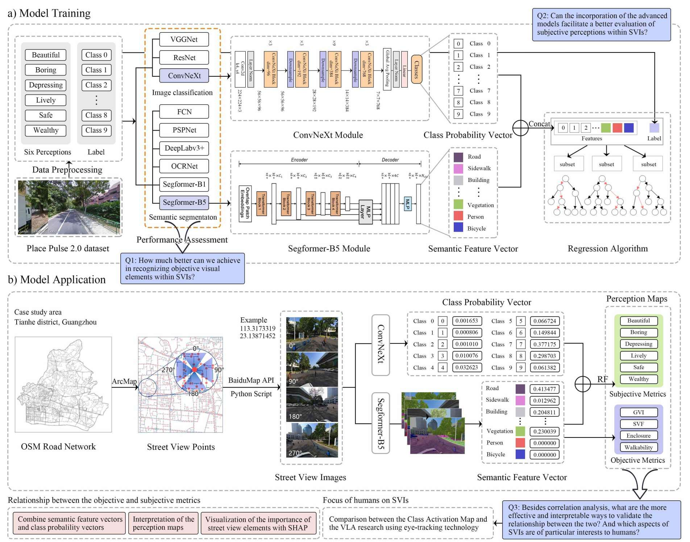
Figure 1
a) Illustration of the training process for our approach using the Place Pulse 2.0 dataset. b) Application of our approach on the Tianhe District dataset, showcasing its practical utility.
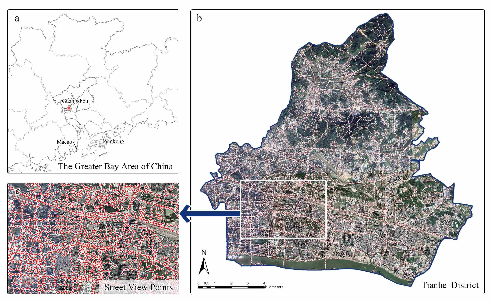
Figure 2
Case study area. (a) The Greater Bay Area with emphasized locations of Guangzhou. (b) Tianhe District in Guangzhou, showcasing its road network. (c) A detailed segment of Tianhe District, highlighting points along the roads.
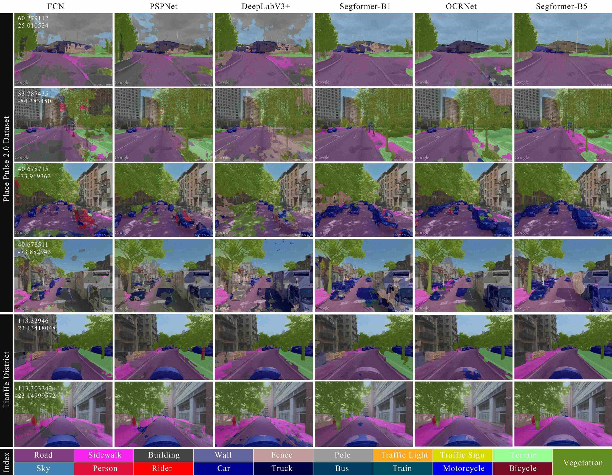
Figure 3
Semantic segmentation results from different models on SVIs within the Place Pulse 2.0 and Tianhe District datasets.
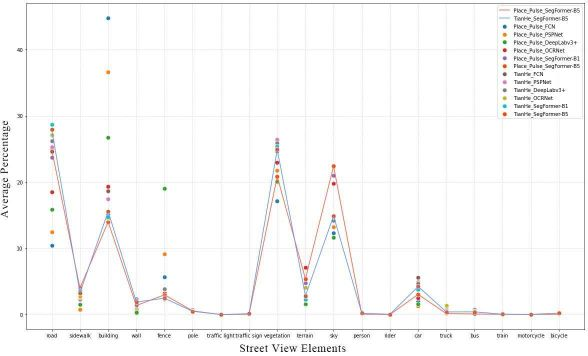
Figure 4
Average percentage of street view elements identified by different models. Each point represents a different model, and the connecting lines illustrate the trends in changes of street view elements across two datasets.
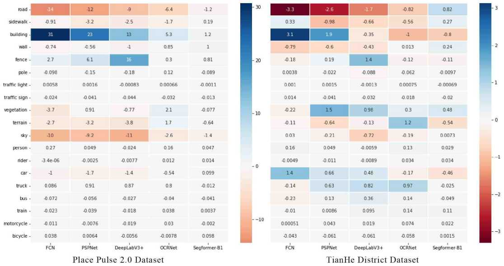
Figure 5
Deviations from the top-performing SegFormer-B5.
Table 3
Distribution of model training data.
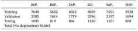
Table 4
Performance of each model combination in predicting perception scores.
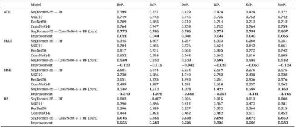
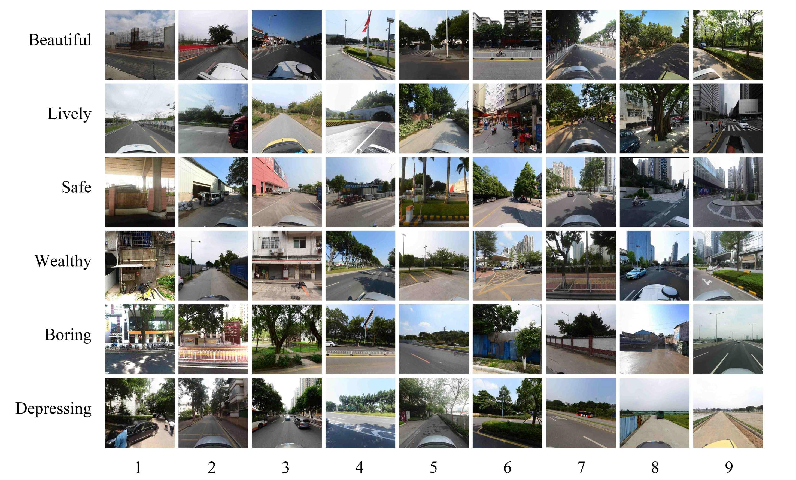
Figure 6
Selected examples of SVIs from Tianhe District dataset, illustrating varied scoring.
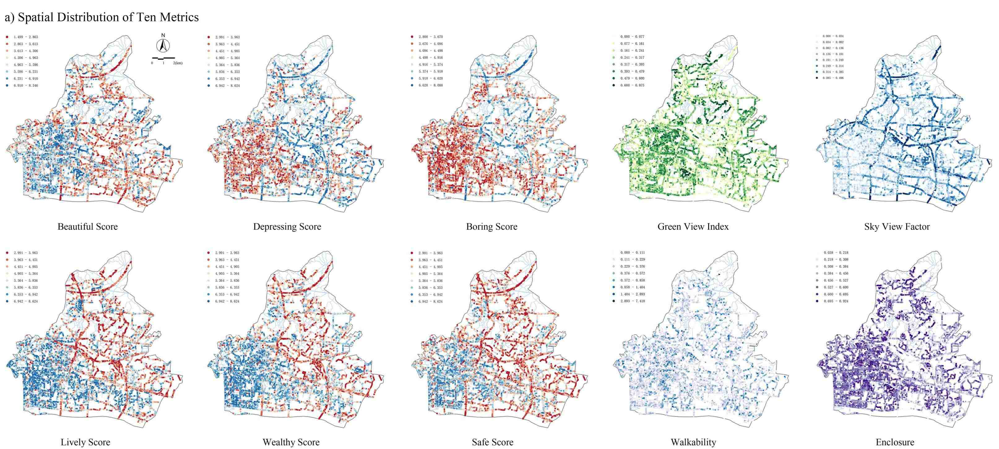
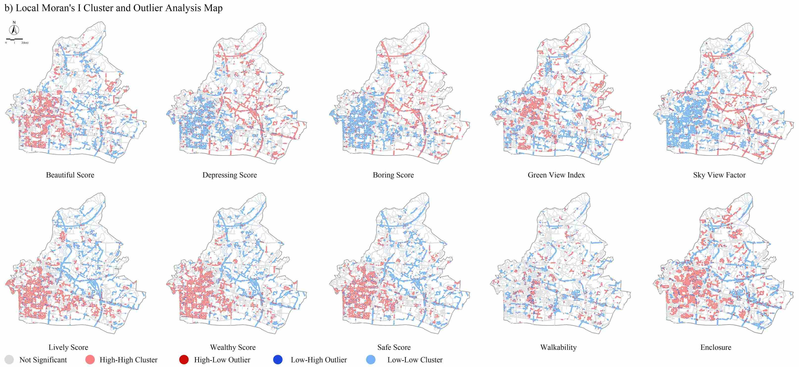
Figure 7
a) Spatial distribution map of ten metrics in Tianhe district, where red represents lower scores and blue higher scores for six subjective metrics. Deeper colors indicate higher scores for four objective metrics. b) Local Moran's I cluster and outlier analysis map, providing a clear visualization of clustering and outliers for spatial quality identification.
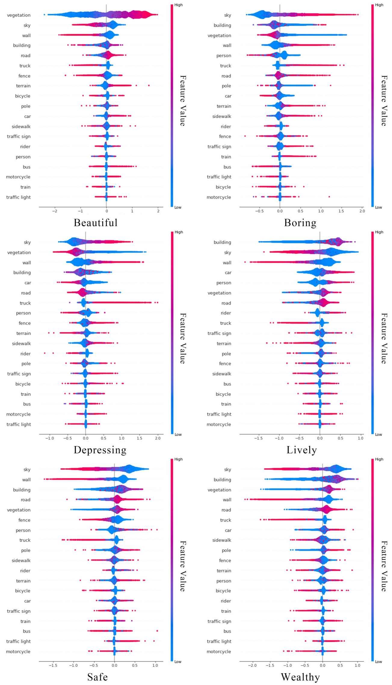
Figure 8
SHAP visualization depicting feature influence on model predictions: red for positive and blue for negative impacts.